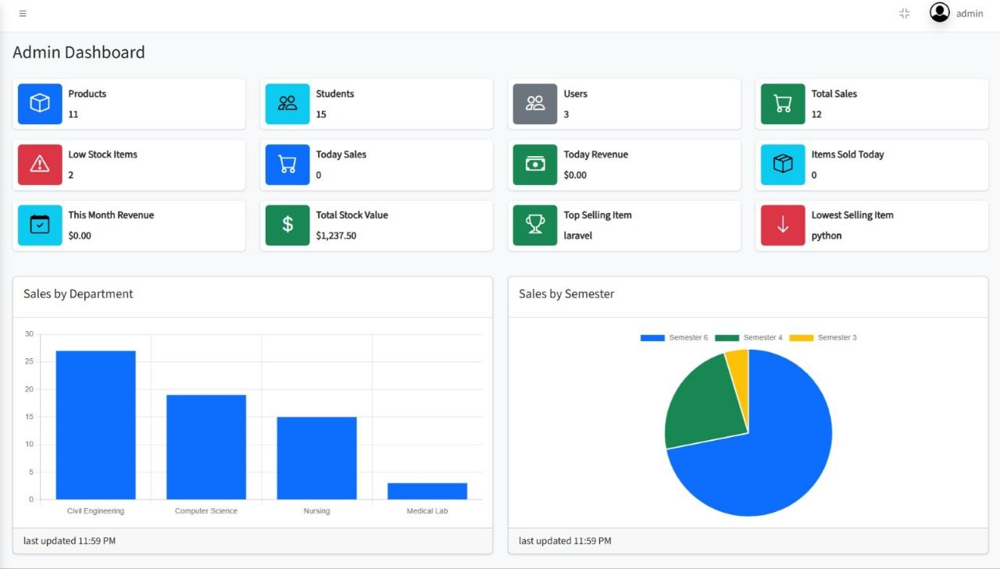

University Stationery Management System
A role-based web application designed to simplify stationery inventory, product management, stock monitoring, and reporting for a university stationery department.
Management System
Academic System
Role
Full-Stack Developer
Timeline
2026
Stack
PHP, MySQL, AdminLTE

3
User roles
Inventory
Product & stock tracking
Reports
Charts & stock insights
Excel
Product import support
The challenge
University stationery departments often handle a large number of products, stock movements, and user requests. Managing this information manually can make it difficult to monitor available inventory, track products, and maintain accurate records.
The goal of this project was to build a centralized Stationery Management System that allows authorized users to manage products, monitor stock levels, access reports, and control system access through role-based permissions.
The main objective was to create a simple, organized, and reliable system for managing stationery operations from one centralized dashboard.
Project goals
The system was designed around several practical requirements:
- Centralize stationery product and inventory management.
- Provide role-based access for different types of users.
- Monitor stock levels and identify low-stock products.
- Generate useful reports and dashboard insights.
- Support product data import through Excel files.
- Provide a secure authentication and session management system.
System architecture
Role-based access control
The application uses a role-based structure to control what different users can access and manage inside the system.
- Administrator: Full access to system management, users, products, reports, and administrative features.
- Staff: Access to day-to-day stationery and inventory operations.
- Special Member: Restricted permissions based on assigned responsibilities.
The interface and available navigation options are organized according to the user's role, helping keep the system structured and preventing unauthorized access to sensitive features.
Final hi-fi screens showing the redesigned dashboard, reports, and stationery workflow builder.
Product Management
Manage stationery products using organized product records, unique product IDs, and inventory information.
Stock Monitoring
Track available inventory and highlight low-stock products to support better inventory decisions.
Reports & Insights
Dashboard reports and charts provide a clearer overview of inventory and stationery operations.
Requirements & planning
Defined the main stationery workflows, user roles, permissions, inventory requirements, and reporting needs.
Database design
Designed the MySQL database structure to organize users, products, inventory records, and related system data.
Backend development
Built the application logic using PHP and MySQL, including authentication, session handling, CRUD operations, and role-based permissions.
Dashboard & interface
Integrated an AdminLTE-based dashboard with navigation and features adapted to different user roles.
Testing & refinement
Tested core workflows including login, role permissions, product management, stock monitoring, reporting, and data import functionality.

Final hi-fi screens showing the redesigned sidebar, dashboard home, and notification workflow builder.
Before — 14-item sidebar, no clear entry point
After — 6-item sidebar, goal-first onboarding checklist
Key technical decisions
Role-based permissions
Different users require different levels of access. The system separates Administrator, Staff, and Special Member roles so that users only interact with features relevant to their responsibilities.
Structured product identification
Products are organized using structured records and unique identifiers, making inventory easier to manage and helping reduce confusion when working with multiple stationery items.
Low-stock monitoring
Inventory visibility is an important part of the system. The application includes stock monitoring features that help administrators and staff identify products that require attention.
Excel data import
To make bulk product management more efficient, the system supports importing product information from Excel files instead of requiring every record to be entered manually.
Dashboard reporting
The reporting interface provides charts and system insights that make it easier to understand inventory information and monitor stationery operations.
Technologies used
- PHP: Backend application logic and server-side functionality.
- MySQL: Database storage and data management.
- AdminLTE: Dashboard and administrative interface structure.
- HTML, CSS & JavaScript: Frontend interface and interactive functionality.
- XAMPP: Local development environment.
Project outcome
The result is a centralized Stationery Management System that brings product management, inventory monitoring, user access, reporting, and administrative operations into a single web application.
This project demonstrates my ability to design and build a complete full-stack system, including database design, backend development, authentication, role-based access control, inventory management, and administrative dashboards.
What I learned
Building this project strengthened my understanding of full-stack development and showed me the importance of designing systems around real workflows and user permissions.
It also provided practical experience with database relationships, PHP application development, session management, role-based authorization, inventory logic, and dashboard-based interfaces.
Interested in working together? Get in touch — I'm always interested in building useful and practical digital solutions.